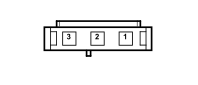

H001A IGNITION SWITCH (FRONT)
- Path
- Electrical equipment > 3 CONNECTORS > H MANUAL ELECTRIC CONTROLS > H001 IGNITION SWITCH > H001A IGNITION SWITCH (FRONT)
- Kind
- connector pinout (pin -> wire colour -> other end)
- Applies to
- engines: 1.2 8v; all production periods; only with equipment: Smart gearbox
- Interactive page
- https://sloeber94.github.io/elrnDB-fPnd/en/#/169003209
Applies to: engines: 1.2 8v; all production periods; only with equipment: Smart gearbox

Wiring | Colour |
|---|---|
BIANCO (white) |
Pin | Cable | Destination | |||
|---|---|---|---|---|---|
Sec.. | Colour | Node | Connect. | Pin | |
1 | 1,5 | C (orange) | X | 6 | |
7 | |||||
4 | |||||
2 | 1,5 | R (red) | 26 | ||
3 | 1,5 | M (brown) | X | 76 | |
86 | |||||
Topics linked from this page (3)
Topics that link to this page (12)
- B001D JUNCTION UNIT (FRONT)
- B001D JUNCTION UNIT (FRONT)
- B001D JUNCTION UNIT (FRONT)
- B001D JUNCTION UNIT (FRONT)
- B001D JUNCTION UNIT (FRONT)
- B001D JUNCTION UNIT (FRONT)
- B001D JUNCTION UNIT (FRONT)
- D004 FRONT/ENGINE COUPLING (FRONT)
- D004 FRONT/ENGINE COUPLING (FRONT)
- D004 FRONT/ENGINE COUPLING (FRONT)
- D004 FRONT/ENGINE COUPLING (FRONT)
- M054B ROBOTIZED TRANSMISSION CONTROL UNIT (FRONT)